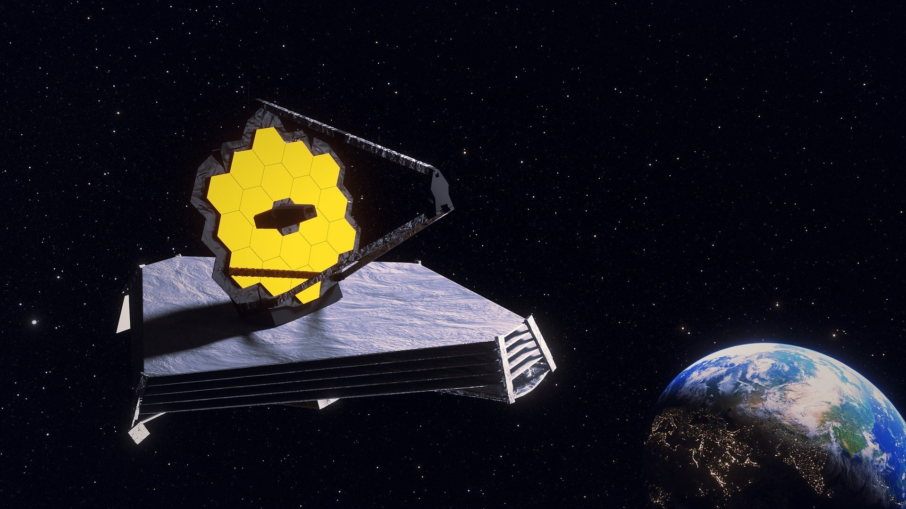
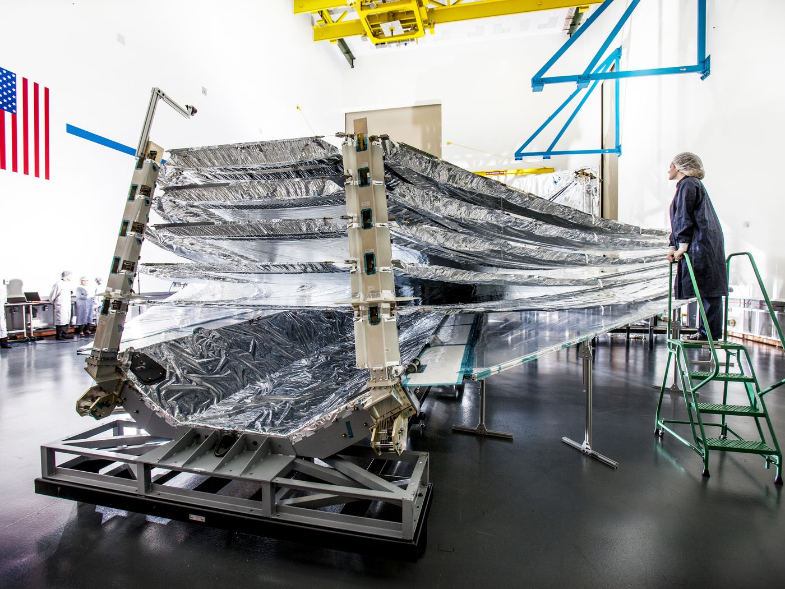
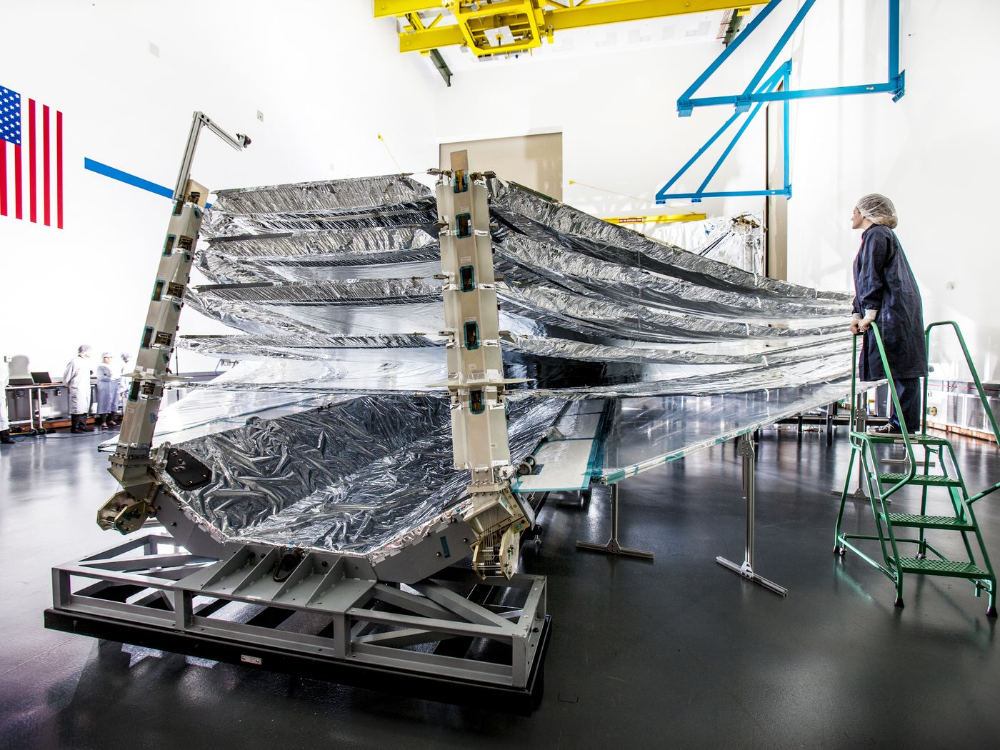

James Webb Telescope
Introduction
In the cauldron of the early universe no light could escape the dense opach fog of primordial gas. As the cosmic wonder of atomic particles began to cool down hydrogen atoms began to form, leading to the universe's first stars beautiful yet violent. Burning the fog that blocks all light from escaping the expanding universe. From this time some photons have traveled through space and time untouched for 13.5 billion years. Until they will hopefully reach their destination here on the man-made detectors of James-Webb telescope. A journey through space coming to an end all for the curiosity of humans.
Eningeering and Science
The James Webb telescope is going to give us our first ever detailed glimpse of this early universe from which we and everything we know was born. The James Webb telescope is a 10 billion dollar venture. A venture that has eaten into NASA’s limited budget, one quarter of NASA’s entire astronomy budget for years. The combination of technologies required to make the James Webb telescope possible are unique to this time period in human history. The launch vehicle, the image processing, the electromechanical systems, the programming, the cooling systems, the mirror, and finally the sunshield. This marvel is the culmination of not just the decades of work from engineers and scientists, but thousands of years of work by our ancestors. The materials and engineering required to peer back 13.5 billion years into the reionization(The 2 two second gap going through the second of two major phases in the creation of the universe.) is incredible. The James Webb telescope will not be in earth’s orbit like Hubble; instead it will be at a destination 1.5 million kilometers from the Earth or Legrange point two. A Legrange point is a point where small objects like a satellite can stay more or less in the same position relative to the gravitational bodies that they are traveling with. This happens when two bodies precisely equals the centripetal(The force required for the object to move with the gravitational bodies). These are like parking spots that allow satellites to sit in a stable position. While using very little fuel. So far we have found 5 Legrange points that are between the Sun and the Earth. Lagrange point 1 lies between the sun and the earth. It is extremely useful for Sun observation satellites. However because of the nature of the James Webb telescope’s job it wants to avoid the light from the sun. Since it is an infrared telescope. Infrared is head and the heat emanating from the Sun completely saturates the sensors and makes observing the distant past impossibile. Instead the telescope will be launching to L2 where it can turn its back to the Sun, Earth, and Moon, which will stay in the same position, nicely lined up behind the telescope thanks to L2’s, unique physics. In order to operate correctly the dark side of the telescope needs to operate at minus 233 degrees celsius. If the telescope were to instead reach to -83 degrees celsius the telescope would basically be boiled. Therefore the sunshield of the telescope will have a massive job. To do this the team had to map every heat flow to make sure that they do not let any leak through from the hot side to the cold side. To make sure that the sun light that is dumping approximately 200,000 watts of power into the telescope and they only want less than a watt to get through to the telescope so it can cool the telescope. This is a very tough job. As we know heat can transfer in three ways conduction(this is where it transfers from atom to atom), convection(Heat is transferred from the physical movement of atoms) and, radiation(where heat is transferred through electromagnetic waves. ) as we know from our thermos experiment. Convention isn’t a problem in space but the other two still are. They manage these by using a light, strong resistant from solar radiation, stable across all temperatures and, reflective. The material that they went with is Kapton. Kapton is normally transparent though with coating you can make it better for the sencerairo they used aluminum for this coating which checks all the boxes from a material. Another, problem they they would have to address is the deployment challenge. In order to fit into the rocket the sunshield will have to be folded. Leading to some complicated mechanics to ensure that it enfolds correctly when it matters. THe unfolding process will begin a few days after launch not too far from earth. Starting with solar panels and communication antenna with some simple mechanisms. There are 300 parts that could’ve failed in the unfolding as the telescope ges to L2. There are 107 pins holding the sunshield together and they have to be released on queue to allow the system of pulleys, motors, cables, bearings and springs to begin unfurling the sunshield into its precise complete shape. This process will take three days, and once the optical components are complete it will lock in place. You might remember that the dark side of the telescope will be kept at -233 celsius thought for the mirrors of the telescope are required to be at 7 degrees kelvin close to the closest temperature possible. The telescope integrates a cryocooler for this purpose, Costing 150 million dollars. The most stunning part of the telescope is the golding mirror 6.5 meters in diameter made of 18. hexagonal segments what is the point of this. The Mirror is made out of beryllium plated in gold. They need a structure that can’t bend or warp in temperature changes, and also be extremely light weight to reduce launch costs. Beryllium is better than silica glass since it’s better at dealing with the cryogenic temperature the mirror will operator in keeping the shape and not scratching so much that it ruins the carefully shaped curves. As most of us know, on hubble the telescope is by 1/200th of a nanometer something very small which caused the images to be blurred. Though because hubble would be in the earth’s atmosphere it was made to be serviceable where astronauts can go and fix the problem. This cannot be done with the James Webb telescope since it is just too far away. Therefore each mirror of the telescope is made to be programmable so you can change the oratination and angles of all 18 mirrors to 1/10,000ths of the human hair. Once fully deployed the mirror will adjust itself until the focal point of the secondary mirror is where they want it to be, this is similar to collimating a telescope. WE are on the frontier of a new space age and the James Webb telescope is a milestone on our journey of being a more capable space faring society. This is just one of the many milestones in our brief time as a species capable of escaping gravity. From building our incredible global position network and sending satellites to the far reaches of our solar system to visiting the moon and building reusable rockets. It’s never been more exciting to be an aerospace enthusiast, especially when you can get access to this blog. Hopefully you enjoyed reading this and hopefully you will continue reading the more amazing things I have in store.
 
